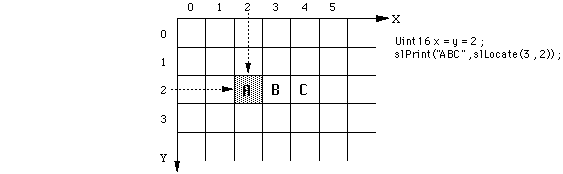

Return to previous page | Return to menu | Go to next page
void *
Character display function
Display position calculation (parameter is cell specification)
void *slLocate(xpos , ypos)
Uint16 xpos ;
Uint16 ypos
x pos X coordinate of text display position (range: 0 to 63 cells) y pos Y coordinate of text display position (range: 0 to 63 cells)
Address value for text display
Example of function “slLocate”:
Uint16 x = y = 2 ;
slPrint ( "ABC" , slLocate ( x , y ) ) ;

・ It is divided by the cell unit of the grid in the left figure.
• One cell consists of 8 x 8 dots, with the origin at the top left of the screen.
Reference: Chapter 8 Scroll
slLocate